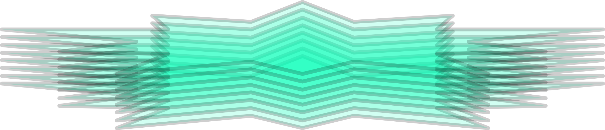
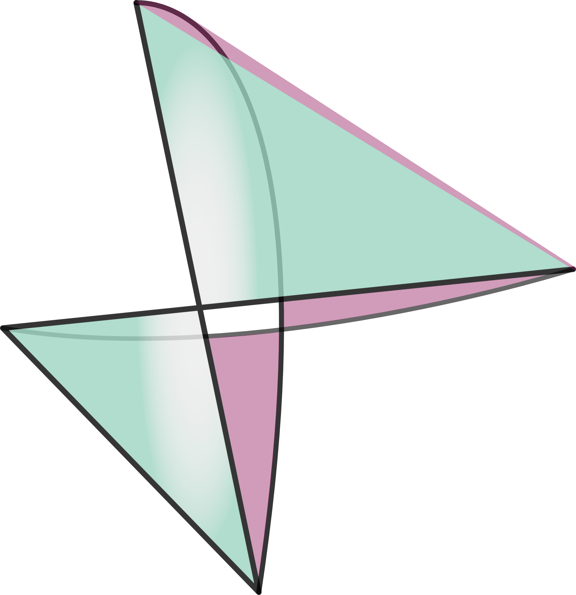

26-03-29 'starglass'

26-03-14 'untitled'

26-03-13 '?.?'

8
8
.oPYo. 8 .oPYo. o o ooYoYo. .oPYo.
8 8 8 .oooo8 8 8 8' 8 8 8oooo8
8 8 8 8 8 8 8 8 8 8 8.
8YooP' 8 `YooP8 `YooP' 88 8 8 8 `Yooo'
8
8
homepageb-sidec-side

